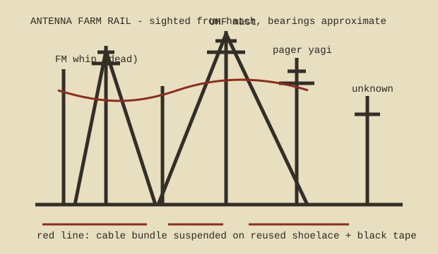

Mast A 1.6 m whip, black base cracked, coax cut 22 cm below strain loop. Marked DEAD in yellow paint on the rail, date unreadable.
Mast B FM whip with two hose clamps and one stainless clamp. Receives nothing in the stairwell except refrigerator hash.
Mast C UHF mast, guyed to two cinder blocks and one obsolete sign foot. North guy wire sings in wind above 30 mph.
Mast D small pager yagi pointed 061°. Birds prefer the rear element. Red tape on feedline has fused into one sleeve.
Cable bundle four black, one gray, one cloth-jacketed mystery line. Bundle is suspended from the rail with a reused shoelace and black tape.
Do not remove abandoned coax without tracing it to the equipment closet. One dead-looking line still feeds the basement clock.